几何画板基础入门教程
作者：TeliuTe 来源：基础教程网
十四、移动动画 返回目录 下一课一个点移动到另一个位置，还可以追踪点的轨迹；
1、移动
1）用画点工具，画两个点，依次选中第一个点、第二个点；
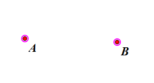
2）点菜单“编辑 - 操作类按钮 - 移动”；
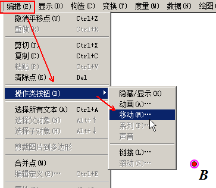
3）出来的对话框里，选择中速，和“移动到目标位置”；
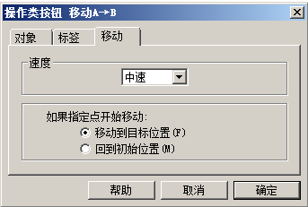
4）在左上角出现一个按钮，名称是“移动A→B”，也就是从A点移动到B点，这个名称可以在属性里修改；
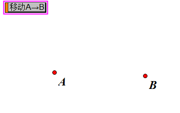
5）点击按钮，点A就会移动到B点，然后停在B点位置；
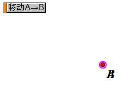
6）点菜单“编辑 - 撤销”，可以回到初始位置；
7）还可以创建一个按钮，让点移回原来位置，点菜单“度量 - 坐标”，找出A点的位置；
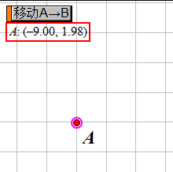
8）点菜单“绘图 - 绘制点”，在A点位置构造一个点C，选择A、C，作一个A→C的移动按钮，隐藏不需要的对象；
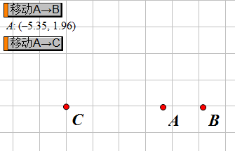
2、移动三角形
1）同时移动三个点，就可以移动它构造的三角形；
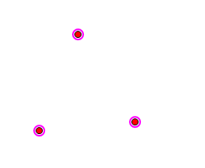
2）由点构造线段，复制粘贴，得到另一个三角形，移到右边；
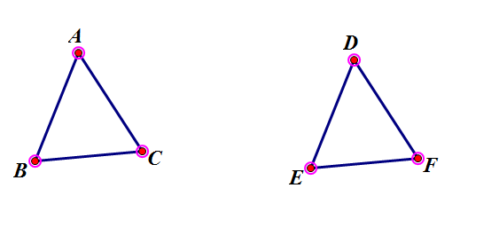
3）依次选择对应的移动的点，A→D，B→E，C→F，然后点菜单“编辑 - 操作类按钮 - 移动”；
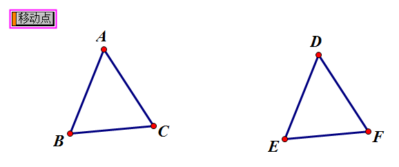
4）点按钮，三角形就会移动到右边，可以在移动中，再次点击动画就会停止，拖动按钮左侧的手柄，可以选择或移动按钮；
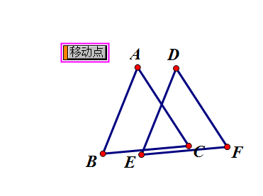
本节学习了移动动画的基础知识，如果你成功地完成了练习，请继续学习下一课内容；
本教程由TeliuTe制作|著作权所有
基础教程网：http://teliute.org/
美丽的校园……
转载和引用本站内容，请保留作者和本站链接。